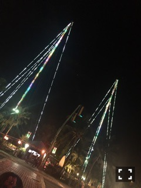

| 2016/06 28 Tue | たられば_(．．*)vol.98 |
みなさんこんばんはー！
相楽伊織です！
最近は久しぶりに
友達と沢山お出かけ行って来ました♪♪
この前は中学の友達と会ったし
高校の友達ともお出かけ行ったりして
あまり都合が合わないから
中々会えなかったお友達と会いたくなって
色んな子に声かけてます♪♪
花奈しゃん♡
あと、話が変わっちゃうのですが、
金曜日公開の
｢アリス・イン・ワンダーランド｣も
観に行きたくてうずうずしてます(__)
前回のも観ていて
すごい可愛らしかったから
また映画館で観たいなぁって思って♪♪
最近ホントに
映画にハマりすぎて大変(^^;
昨日も家で映画観たし、、
でも映画は
色んな人に出会えるし
世界が違うからどれを観ても楽しい(^^)
好きなジャンルとか無く
全部好き♡
名作も新作も
ホントに何でも観る！
オススメされたら
必ず観る！
この前お父さんが
｢ムカデ人間3｣を観たらしいんだけど
私は1だけでもう十分だったから
流石にそれは観る気にならなかった(*_*)
映画にハマったのは
お父さんの影響なんです(^^)！
小さい頃から
映画をよく観てて
今は自分で選んでるけど
前までは
お父さんのオススメを観てたの！
だから、たまに眠くなったり
途中で訳が分からなくなってしまった
映画もあるんだけど、、(。-∀-)
でも
映画の楽しみを教えてくれたお父さんが
大好きです♡
おならは臭いけど、、
あ！でも
柿ピーは大好きですm(_ _)m
すごい話がごちゃごちゃになっちゃった
~いおり庵~
 ライブの時ってうちわ見えてる？
ライブの時ってうちわ見えてる？
見えてるよーヽ(*^^*)ノ
私のうちわがあると
すごい嬉しい♪♪
伊織はマンガ読む？
最近は全然読んでないです！
でも少年漫画が好き！
特にバスケをやってたから
｢スラムダンク｣と｢黒子のバスケ｣は好き！
少女漫画は
中学生以来読んでないかな(__)
苦手な食べ物はあるんですか？
あるよー！
なんか、色々、ある(^^;
先日、乃木坂46
2冊目の写真集発売が発表されましたー！
グアムで撮影だったから
撮影もいつもと雰囲気が違って
すーごく楽しかった(^^)
発売は8月5日です！
お楽しみにー♪♪

懐かしい、、
逆バンジー
そう言えば！！これやったの！！
夜に！！
凄かったーー(°_°)！！
上がる時もドキドキなんだけど、
空中で一瞬止まった後に
落ちる時が一番怖かった！！
でも夜景が綺麗だったし
また乗りたいしまた行きたいーーー☆★
 楽天SHOWTIME 乃木坂ゴルフ倶楽部
楽天SHOWTIME 乃木坂ゴルフ倶楽部
前回から
メンバーのゴルフウェアが
カラフルになったので
そこも少し注目です(^_-)-☆
OVERTURE 発売中
(2期生全員)
GREEN GORA 発売中
(まあやさん)
月刊エンタメ 6/30 発売
(2期生全員)
FLASHスペシャル 発売中
(真夏さんリスペクト軍団)
別冊カドカワ 6/29 発売
よろしくお願いしますm(_ _)m
次回のブログで
新制服の写真載せます！
i o r i .

コメント(206)
2016/06/28 21:42